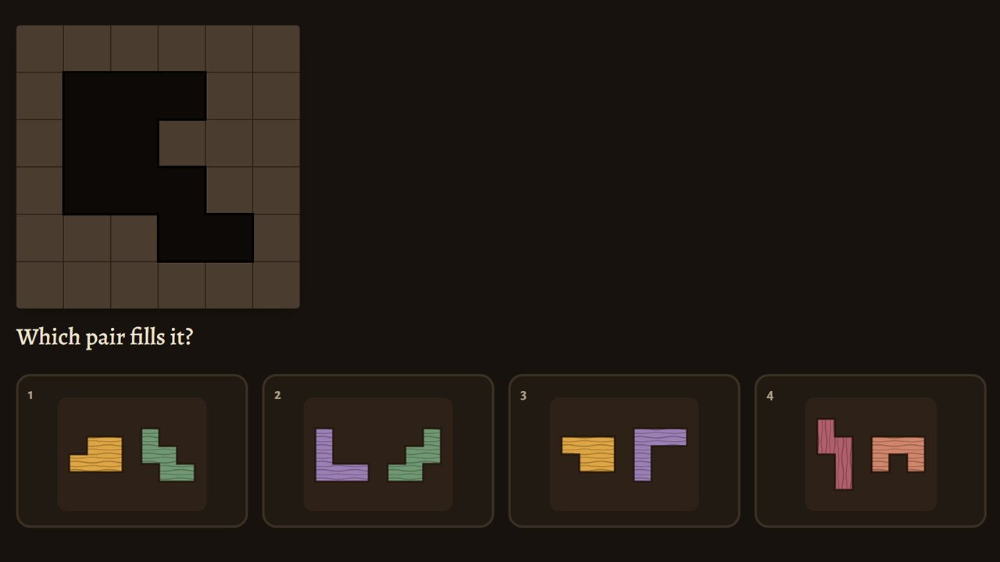
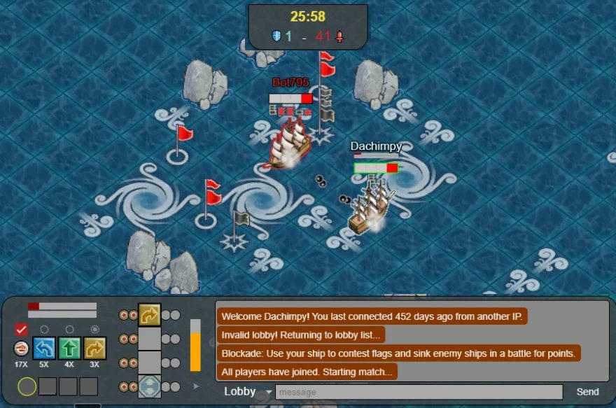

The sloop race
A race made of puzzles: every shortcut a different one, every way round able to win.
New ways to learn Puzzle Pirates' puzzles, tried out to see what works.
A playground of ideas for learning Puzzle Pirates' puzzles. It's for when you know the basics, the game's own tutorials see to those, and you'd like to get better at a puzzle or two.
Each tutorial comes two ways: played in 3D with a pirate beside you, or laid out to read at your own pace. They're experiments, so some will work better than others.
And the way to really get good? Play the game, and talk to its people. They're lovely.
A race made of puzzles: every shortcut a different one, every way round able to win.

Two boards of mirror strokes, one for each side's oars. The turn you build shows on her.
See more: every place in the den
Tzz builds a chain a step at a time, the plan marked on the board. Then it's your go.
 In 3DTzz's balloon animals
In 3DTzz's balloon animals
Straight to technique: whites away from the fire, a Crystal Clear to aim for. Mind the still.
Dignity at her star table: four rings, wild places, and why only chains pay. Turn the werewolves back before the moon's gone.

Which pair fills the hole? Quick puzzles, and doubloons to bet at the harbour table.


A pirate hideout dug into a cove, played through Puzzle Pirates' own puzzles. Mend the wall with Carpentry while raiders row in, man the gun tower, build yourself a shack. Then take the old sloop out: islands to find, pirates to meet, a wedding, a checkpoint to get past, and a race.

Mischievious will marry anyone to anything. Choose the tone, the venue, the theme and the plot, then share your wedding as a link.

A whole gallery of portraits, with Gravee showing you round by candlelight. Sit for one of your own. Mind the vampire.

Past Kikkit's whirlpools, if you can find the way, a little ice floe of penguins. One of them has a sack.

Barrels of rum on your deck and Helium aboard, whistling past the Empire. Nothing suspicious at all.

Play blockades online ↗The Global Cade Sim, made by AMH YPPediaLook up the basics ↗YPPedia, the wiki written by the game's players Puzzle PracticePractise puzzles ↗Puzzle Practice, made by Jice Meet real pirates ↗The Trophy Hunters' Discord: a friendly crowd to play, chat and help
Meet real pirates ↗The Trophy Hunters' Discord: a friendly crowd to play, chat and help
Every place in the den has a link that drops you straight there. New things land in What's new first.
The startA broken wall, raiders rowing in
 The walkFrames for the wall-walk, by Carpentry
The walkFrames for the wall-walk, by Carpentry
 The gun towerGunnery on its deck
The gun towerGunnery on its deck
 Everything builtThe whole den, the beach beyond
Everything builtThe whole den, the beach beyond
 Your shackBuilt from Carpentry pieces
Your shackBuilt from Carpentry pieces
 The captain's mapWhere the sea opens up
Go sailingThe old sloop, and the sea
Rowing herHer oars out, a board each side
The captain's mapWhere the sea opens up
Go sailingThe old sloop, and the sea
Rowing herHer oars out, a board each side
 Dignity's checkpointHer cutscene at the gate
Dignity's checkpointHer cutscene at the gate
 Umami's rescueThe lagoon, the crane, Foraging
The Wedding IsleMischievious marries anyone
Umami's rescueThe lagoon, the crane, Foraging
The Wedding IsleMischievious marries anyone
 Kikkit's islandHer whirlpools
Vegas IslandThe penguins past the whirlpools
Tzz's islandBalloon animals: Sailing
Kikkit's islandHer whirlpools
Vegas IslandThe penguins past the whirlpools
Tzz's islandBalloon animals: Sailing
 Helium's stillDistilling, and the odd bang
Helium's stillDistilling, and the odd bang
 Helium's rum runNothing suspicious at all
Helium's rum runNothing suspicious at all
 Port DecorumThe Empire's island
Port DecorumThe Empire's island
 The smugglers' beachRound the back of it
The housing districtEvery house's door
Gravee's Bedside ManorsHer portraits, and a vampire
The smugglers' beachRound the back of it
The housing districtEvery house's door
Gravee's Bedside ManorsHer portraits, and a vampire
 Roobear's ROOmRobert rubs your ear
Roobear's ROOmRobert rubs your ear
 Hugs and CookiesDachimpy's house: friends, then the old sims
The Wolf DenDignity's star table
Hugs and CookiesDachimpy's house: friends, then the old sims
The Wolf DenDignity's star table
 The sloop raceOn the starting line
The sloop raceOn the starting line
 The starlit doorDuty Navigation opens it
The starlit doorDuty Navigation opens it
 Watch the raceFour racers, any camera
Watch the raceFour racers, any camera
 The course editorLay out your own race
The course editorLay out your own race
 CarpentryThe den's wall
GunneryThe gun tower
SailingWith Tzz
CarpentryThe den's wall
GunneryThe gun tower
SailingWith Tzz
 DistillingWith Helium
DistillingWith Helium
 Duty NavigationThe starlit door
Four-ring NavigationWith Dignity, in the wolf den
Duty NavigationThe starlit door
Four-ring NavigationWith Dignity, in the wolf den
 ForagingUmami's rescue
ForagingUmami's rescue

Dachimpy
The thinking behind it all: How it's designed. Every change, with pictures: What's new.
Puzzles and pieces stood up on their own while they're built. Nothing to guide you here, but if you're curious: